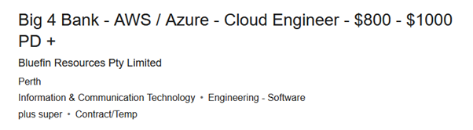
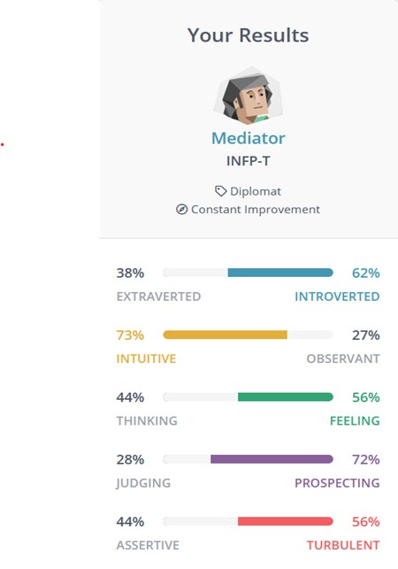

Personal profile
Student number: 3491116
E-mail: 3491116@student.rmit.edu.au
Nationality: Australian
Education: Diploma, Laboratory Technology (Pathology tests)
Interests: Gardening, herbs and chilies. Documentaries: particularly those involving the human experience of individuals and groups, food and history.
Interest in IT
IT has become vital in most industries in Australia. The management, processing, and security of information is part of the day-to-day business of many modern businesses. From personal experience having a knowledge of the internet and how to obtain quality accurate information quickly is better than memorizing data. IT focuses on providing practical solutions to users of technology. I have a strong employment history in professional cookery and understand the quality or range of outcomes does not necessarily depend on the quality of the equipment or produce utilized, but imagination and experience can provide excellent results with limited resources.
As the world becomes more automated it is the service industries that are becoming the foremost employers, and this is where IT is making a big impact. From the network and hardware through to software and onto storage, retrieval and the end user experience the computer specialists’ skills are sought after and valued by employers. Understanding how a system operates certainly makes dealing with its components and associated idiosyncrasies easier.
Solving problems and puzzles are of interest to me as are building and getting things right. It appears to me from my experience with computers that the evolution of a system is always ongoing and its “use by” and relevance is often dictated by the number of users that subscribe to it. I think that the best software usually comes towards the end of a systems use. To use games an example; the programmers found the ways to get every bit of processing power out of the PlayStation 2 as the next console was put on the market. I think they had to make the newer model be able to run the older model’s software as it had become as good as the new model’s software. The overlap was necessary to ensure the take up of the new hardware.
People are also a bit like software, they can evolve and improve while our hardware changes very slowly. With computers the possibilities and opportunities to improve, experience and understand our universe is far reaching and exciting.
Ideal Job
Description
Big four, if you have this in your resume it can open a lot of doors for you in lots of interesting places. However, any entry level job based on IT to gain experience and contacts would be ideal on graduation.
Two examples of IT jobs:
On a more realistic level
Skills I have
Basic experience with word, excel, PowerPoint; some experience with research and evaluating quality of sources and relevance of data.
An understanding of what data is and how it can be used e.g., statistics to inform on a making decision or exposing its meaning.
Skills I need
An example detailing technical skills required for a logistics (Truck) company.
I think I will be able to apply from what I learn and are exposed to in the IT Bachelor’s degree into learning different about systems, coding languages, skills and approaches. One size does not fit all in IT, it will be up to me completely how far I do or do get in this industry.
Learning Plan
I have many shortcomings which I need to address to give myself a genuine shot at this completing and excelling in this degree. The most notable is starting a project and producing work I am proud of. I generally enjoy learning anything, however I might have a bit of what is known as imposter syndrome.
Symptoms of Impostor Syndrome include:
The website proposes solutions and help can be attained through:
My steps to achieving a successful semester
Key skills
In the short term, understanding and/or application of:
HTML Systems and storage
GitHub Networking
Computer mathematics Data collection storage and
Hardware components and their operations Security
Identify trends and new tech Python
governance
Personality Profile
Strengths
Empathy: This goes as far as watching a you tube video and if for example someone falls off their bike, I feel it, not pain but something quite strong and deep.
Weaknesses
I do have a bit of a soft touch that can be exploited by some people.
16 personalities test output
Project Idea
Overview
Reptiles are an integral component of our environment. In many areas of western Australia reptiles are very common and while our interactions are for the most part a live and let live arrangement sometimes our paths meet with negative outcomes for both parties. Pets can attack and kill reptiles and while defending themselves some pets are also harmed and killed.
My project idea is basically a reptile census conducted by citizen scientists. I know from my own experience working and living in the country reptiles and in particular snakes do not always cohabit well with human beings. Water may be scarce or their may an abundance nearby, water means life and food. Reptiles often rely on water to attract their prey and as humans we are dependent on water for a variety of essential aspects, survival, work and the quality of our existence.
I would like to help understand the location and density of reptiles with an app that could be uploaded to a phone and be simple and intuitive to use. The data could also be accessed by rangers and councils and highlight any issues that exist and assess whether some areas may need to have access restricted or relocate the animals if no other option is available. Either way this may enable a local reptile population to maintain a peaceful existence free from interference from pets and humans.
Motivation
Our environment and all the assorted native flora and fauna all have a right to exist in as natural a state as possible. In the old world so much of the habitat has been altered over time by people, that many species are a distant memory. The plants and animals are almost all domesticated anything remotely dangerous is either extinct or endangered. We really are a selfish lot and our approach to conflict in the past was very nearly always “fight and kill”.
Nature itself is cruel and unforgiving; however, we have the brains that learn, understand and form new ideas. Rather than blindly obey our instincts, we can attain a higher state of being by nurturing and supporting our environment. Rather than viewing the world and everything it encompasses as either a resource, worthless, beneficial or dangerous, we can strive for a universal point of view. It is only through universal behavioral change plus many and varied small measures evaluated and documented that we can ensure a world for all.
Description
The app would ideally be on a mobile phone and the user would record the time, date, location and if safe a photo and or a description detailing its appearance and condition. Failing not being able to produce a working program on a phone I would propose a site on the world wide web. This could be accessed by the user, where they could enter and upload the data they had obtained.
The application does not necessarily need to only focus on reptiles, all manner of databases or classification systems could be set up for all sorts of flora and fauna. This may even be necessary to keep the data collectors interested, and who knows maybe a long thought extinct beetle or orchid reappears through serendipity. Just as the Australian census informs on what services are needed where; through understanding the who, where, what and how many of a population. The same can be done for our environment, providing accurate data to those who know how to use it underpins this project.
Tools and Tech
The essential part of the project is the citizen scientist, dog walkers, bushwalkers anyone with an interest in our environment and has the time and wherewithal to contribute. These people would ideally own a mobile phone that could take photos and record time and place.
I have found that there are packages you can use to create mobile applications, such as Kivy or BeeWare from python coding language. As this project is being proposed at a time when I am learning Python it seems appropriate. The are also repositories that can be accessed to assist with writing of the app. A windows app may also be necessary and the ability to upload to it from a phone.
Skills required
The data collectors would require basic phone and computer use, it would also help if they understood the need for rigour when producing data for research. Rigour in quantitative research encompasses the planning, data collection, analysis and reporting, when this all combined produces a sound accurate result it has become useful (Marquart, Franziska 2017). For the project to have any worth the backing of a notable research institute would help. They could also advise and suggest improvements as well as help and advice when interpreting the data. It could be an interesting project to find out the process of getting data from the field all the way into a peer reviewed journal.
A working basic knowledge Python programing language would be a necessary skill as well as some data analysis. Recruiting data collectors could also require some imagination and advertising.
Outcome
To sum up the project would enable me to learn a great deal about working to a deadline and keeping focused on a project and deliver it on time with the quality in keeping with my experience. It is often quoted that you get out what you put in. In this case I hope to get a lot out this project and maybe with some tweaking create something with real world applications even if just a novelty.